BOUNCE
Унікальна технологія в проміжній підошві біговій взуття. Забезпечує високий рівень амортизації під час тренування, дозволяє досягти максимальних результатів при мінімальних витратах енергії.
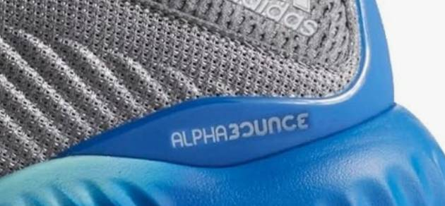
BOOST
Матеріал BOOST™ поєднує різні функціональні переваги м'якості і адаптивної амортизації. Повернення енергії забезпечується енергозберігаючими капсулами у проміжній підошві, які настільки ефективно зберігають і вивільняють енергію, що бігуни відчувають різницю, як тільки надягають кросівки. Розроблені у співавторстві з партнером adidas BASF, провідної світової хімічної компанією, тверді гранули термопластика (TPU) в буквальному розумінні надуваються і перетворюються в маленькі енергозберігаючі капсули, що утворюють оригінальну проміжну підошву.
CLOUDFOAM
Технологія CloudFoam - високотехнологічна інноваційна розробка, представлена м'якою, ультралегкою амортизаційною подушкою, яка забезпечує бездоганну підтримку стопи в повсякденному носінні. Завдяки інноваційній підошві EVA і спеціальній пінній устілці з ефектом пам'яті, кожен власник кросівок adidas neo зможе відчути чудовий рівень амортизації.
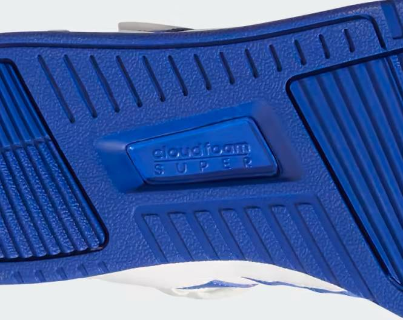
TORSION SYSTEM
Torsion – торс іонний елемент, виготовляється з термокерамики, дуже міцний. Torsion system – служить для забезпечення природного скручиваемости стопи (адаптація до грунту). При рухах босоніж п'ята і передня частина стопи рухаються незалежно один від одного, що додає нозі стійкість на нерівних поверхнях. Впровадження системи Torsion в конструкцію підошви дозволяє стопі зберігати цю природну здатність.
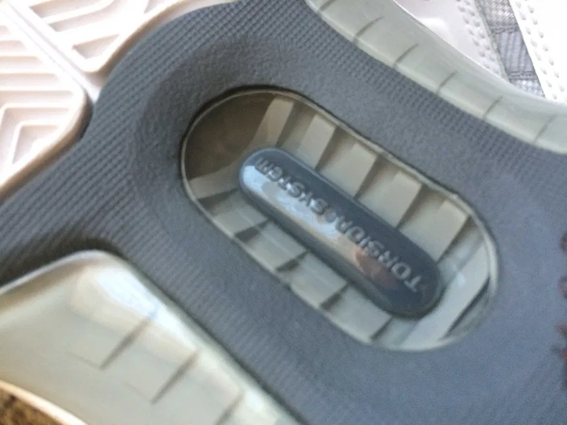
CLIMALITE
ClimaLite — легка, м'яка тканина, що дихає, яка поглинає надлишки вологи і виводить їх назовні, залишаючи шкіру сухою. Ця технологія застосовується в моделях, де у відсотковому співвідношенні більше бавовни.
CLIMACOOL
ClimaCool™ (КлаймаКул) — це технологічна розробка компанії АДІДАС, яка забезпечує видалення вологи з поверхні шкіри спортсмена і вентиляцію, за рахунок використання високо-функціональних дихаючих матеріалів, які вбирають піт і виводять його на поверхню тканини для подальшого випаровування. Вентиляція відбувається за рахунок сітчастих вставок в критичних зонах для підтримки оптимальної температури тіла.
ADIWEAR
adiWEAR - це матеріал з міцної гумової суміші, що застосовується для виготовлення зовнішньої підошви. Відрізняється підвищеною стійкістю до стирання по порівнянні з іншими матеріалами, які застосовуються для виробництва підошви спортивного взуття «Adidas». adiWEAR значно подовжує термін служби спортивного взуття.
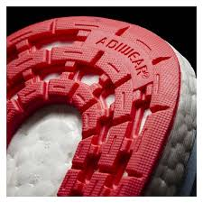
CONTINENTAL
CONTINENTAL — це новий каучуковий компонент, який забезпечує найкраще зчеплення навіть на слизькій поверхні в дощову погоду. У порівнянні з іншими матеріалами, CONTINENTAL є лідером по якості зчеплення з поверхнею навіть на вологій поверхні і при цьому допомагає зробити тренування максимально ефективними при різних погодних умовах і на будь-якій поверхні. В залежності від типу біговій взуття, компонент CONTINENTAL інтегрується у різні частини підошви.
ORTHOLITE
Устілки OrthoLite® зроблені з поліуретану з відкритими порами, що дозволяє зберігати 95% їх пружності після першого року використання, коли устілки з EVA зберігають лише 30%. Поропласт з відкритими порами також забезпечує вільний доступ повітря, швидко випаровуючи вологу, відповідно зменшуючи запахи і ймовірність спучування поверхні устілки. Для екологічної безпеки доданий біоцид для додаткової боротьби з мікробами. Для продукції Adidas розроблені устилки OrthoLite® одинарною, подвійною і потрійною щільності.
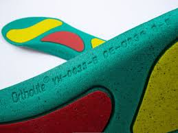
SPRINTFRAME
Забезпечує стабільність, довговічність і жорсткість на скручування, що робить взуття придатним для видів спорту, які вимагають швидких рухів і спритності.
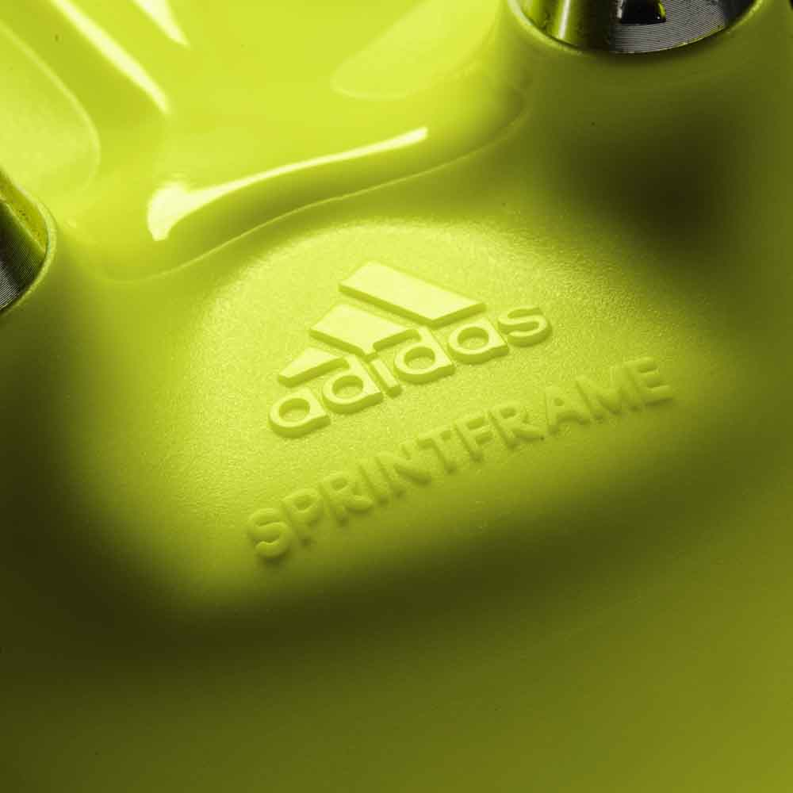
ADIPRENE
adiPRENE розташовується в області п'яти, або глибоко в підошві, або ближче до устілки. Вона являє собою спеціальний елемент, виготовлений з грубої, щільної гуми, мета якого - поглинати будь-які, навіть різкі удари на твердих поверхнях, які найбільш агресивно завдають шкоди стопі. Під час стрибка і подальшого приземлення на асфальт вставка adiPRENE вбереже стопи від зайвої струсу.
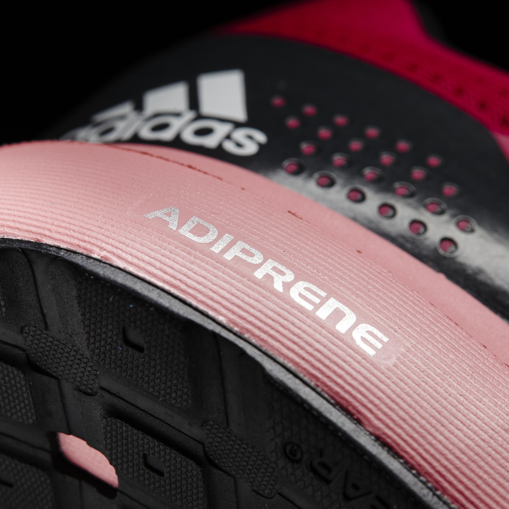
TECHFIT
Технология, которая используется для обеспечения плотной и удобной посадки. Она охватывает стопу, обеспечивая надежную и комфортную фиксацию, повышая стабильность и производительность.
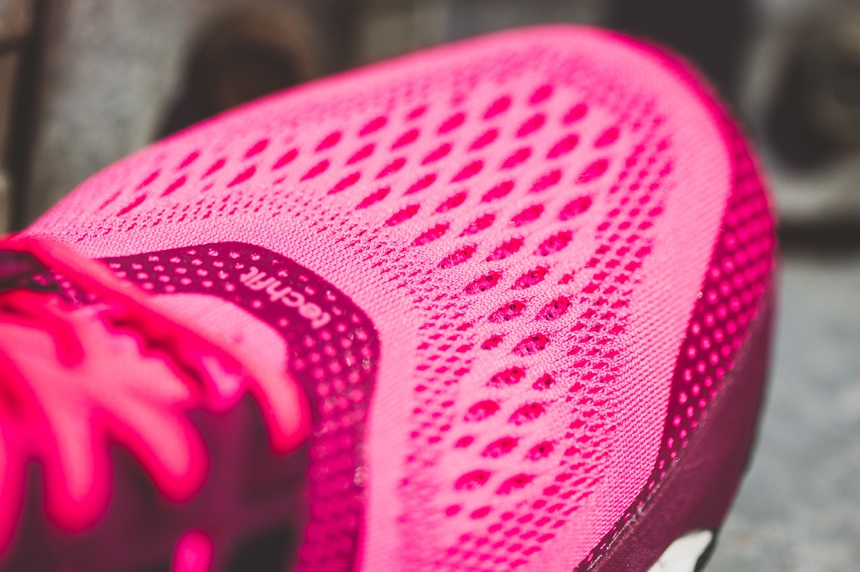
GORE-TEX
Дихаюча водонепроникна і вітронепроникна мембрана захищає на 100 % від дощу і вітру, в той же час дозволяє надлишків тепла і вологи випаровуватися з поверхні тіла. Плівка мембрани Gore-Tex містить 9 мільярдів пір на квадратний дюйм. Кожна пора в 20 000 разів менше краплі води. Тому дощ, сніг і сльота не можуть проникнути крізь мембрану. Але, завдяки тому, що ці пори в 700 разів більше молекули води, волога, випаровуючись, легко залишає поверхню шкіри, і проходить через мембрану. Іншими словами, мембрана Gore-Tex не дозволяє волозі проникнути ззовні всередину взуття, в той же час дозволяє волозі випаровуватися з поверхні стопи, забезпечуючи її дихання. GORE-TEX® Концепція Comfort Mapping (Комфорт Меппінг) Основна ідея концепції полягає в тому, що тіло людини розглядається як карта з різними кліматичними зонами.
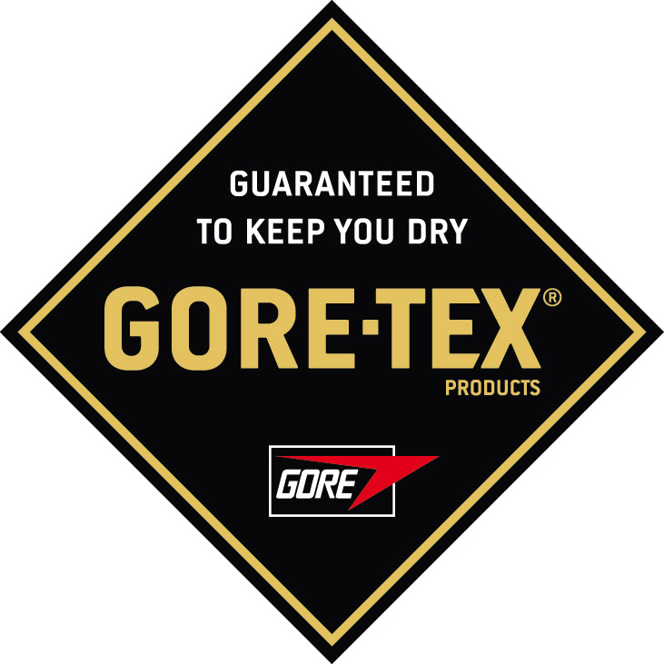
FORMOTION
Суть технології полягає у використанні двох незалежних пластин, рухливо з'єднаних один з одним. Це дозволяє підошві пристосовуватися до нерівностей поверхні і забезпечувати амортизацію, знижуючи навантаження на стопи і колінні суглоби. Еластичне з'єднання двох пластин Formotion миттєво повертає нижню пластину на її початкове положення після кожного кроку, готуючи її до наступного. Різні рівні пружності проміжного елемента допомагають створювати моделі для різних видів спорту — бігу на довгі дистанції, бігу по пересіченій місцевості, туризму.
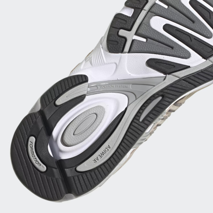
AEROREADY
Технология, которая быстро впитывает пот из кожи и транспортирует его в наружный слой ткани. Она помогает спортсменам оставаться сухими и чувствовать себя комфортно при интенсивных физических нагрузках.
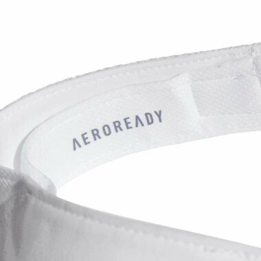
TECHFIT
Технология, фокусирующаяся на поддержании и стабильности мышц. Она применяет целенаправленную компрессию на определенные группы мышц, способствуя лучшему кровотоку, уменьшению мышечной усталости и ускорению восстановления.
PRIMEKNIT
Технологія, яка використовується у взутті та одязі. Для взуття вона створює цілісну конструкцію верху, що зменшує кількість відходів і підвищує комфорт, повітропроникність та гнучкість. А для одягу забезпечує анатомічну посадку, зменшує подразнення та забезпечує повітропроникність.
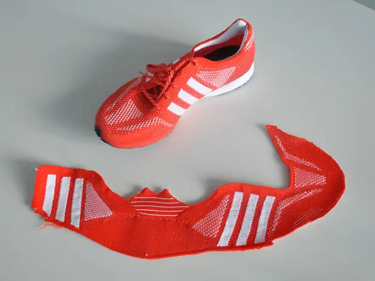
NON MARKING
- Дозволяє підошві не залишати слідів на поверхні (наприклад, на підлозі спортзалу чи на тенісному корті).
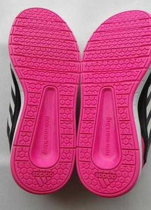